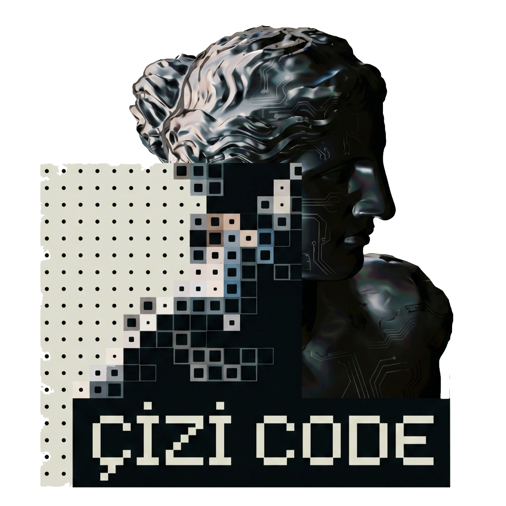

Yerel kodlama araçlarınızı hesabınıza bağlayın.
Anahtarınız yalnızca bu bilgisayarda saklanır ve hesabınıza bağlanmak için kullanılır.
Bağlantılar okunuyor
Henüz yenilenmedi
Kurun, hesabınıza bağlayın veya bilgisayarınızdan kaldırın. Bağlantıyı kapattığınızda özgün ayarlarınız geri yüklenir.